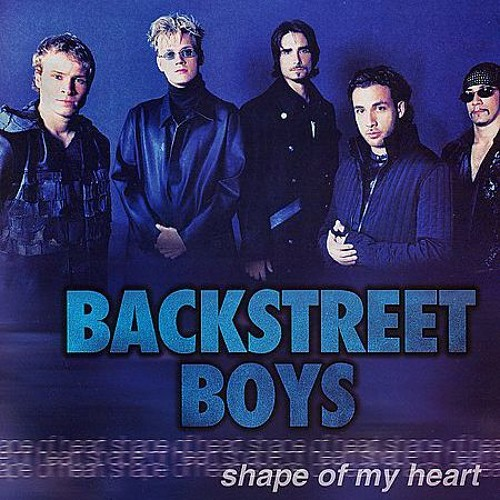

Yeah, yeah
Baby, please try to forgive me
Stay here don't put out the glow
Hold me now don't bother
If every minute it makes me weaker
You can save me from the man that I've become, oh yeah
Looking back on the things I've done
I was trying to be someone
I played my part, kept you in the dark
Now let me show you the shape of my heart
Sadness is beautiful, loneliness that's tragical
So help me I can't win this war, oh no
Touch me now, don't bother
If every second it makes me weaker
You can save me from the man I've become
Looking back on the things I've done
I was trying to be someone (trying to be)
I played my part, kept you in the dark (in the dark)
Now let me show you the shape of my heart
I'm here with my confession
Got nothing to hide no more
I don't know where to start
But to show you the shape of my heart
I'm lookin' back on things I've done
I never wanna play the same old part
I'll keep you in the dark (keep you in the dark)
Now let me show you the shape of my heart
Looking back on the things I've done
I was trying to be someone (trying to be someone)
I played my part, kept you in the dark
Now let me show you the shape of my heart
(Now let me show you the true shape of my heart)
Looking back on the things I've done
I was trying to be someone
I played my part, kept you in the dark
Now let me show you the shape of
Show you the shape of my heart
The End